Adatok
Vezetéknév:
keresztnév:
Melyik Dark Souls rész volt a kedvenced?
Dark Souls I
Dark Souls II
Dark Souls III
Miért?
Ki a Dark Souls III főszereplője?
Ashen One
The Bearer of the Curse
Vince of Thorolund
Kiről nevezték el a Herceg archívumát?
Gwyn
Smough
Seath
Ornstein
Mit ad Snuggly, ha elcserélsz neki egy darab szemetet?
Csillogó Titanit
Titanit darab
Az áldozat gyűrűje
Melyik tárgyhoz adja a legtöbb lelket a Frampt?
Priscilla lelke
Tűzőr lélek
Smough lelke
Arany érme